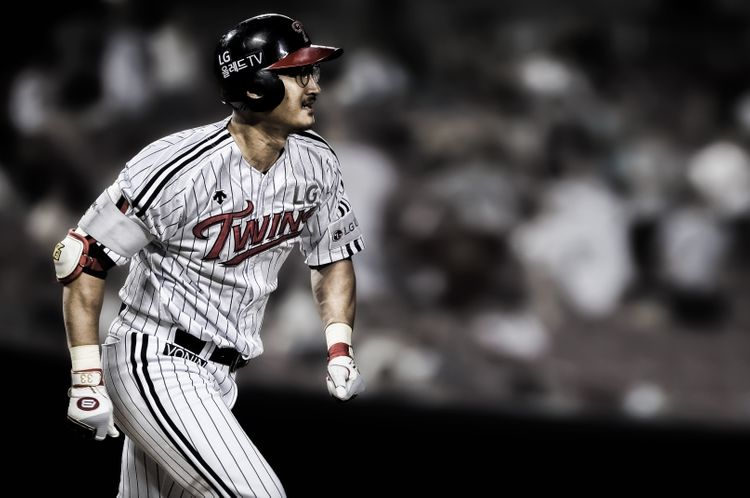

|  | |
|---|---|
| 이름 | 박용택 |
| 생년월일 | 1979년 4월 21일 |
| 직업 | KBS N SPORTS 해설위원 |
| 설명 | 前 야구 선수이자 現 kbs n sports 해설위원. 선수 경력 18년 동안 LG 트윈스에서만 뛴 원 클럽 플레이어이자 간판 스타. kbo 리그 최다 안타 기록자이지만, 2000안타 이상을 친 타자 중 유일하게 프로야구 우승 기록이 없는 비운의 선수이다. 강동구에서 태어나 자랐으며, 명일동 고명초교 재학 시절, 야구부 감독이 줄기차게 꼬셔서 결국 5학년 때 야구를 시작했다고 한다. |